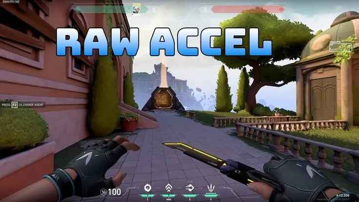

Apa Itu Raw Accel di Valorant? Ini Fungsi, Kelebihan, dan Cara Setting yang Tepat!

Valorant merupakan salah satu game first-person shooter (FPS) yang terus berkembang dan digemari para gamer, termasuk di Indonesia. Sebagai game kompetitif, detail kecil dalam pengaturan game bisa berpengaruh besar terhadap performa pemain. Salah satu pengaturan yang sering dibahas oleh komunitas adalah soal sensitivitas mouse, terutama fitur bernama Raw Accel.
Walau terdengar teknis, memahami apa itu Raw Accel penting banget buat kamu yang ingin meningkatkan akurasi tembakan dan kenyamanan bermain. Yuk, simak penjelasan lengkapnya di bawah ini, mulai dari pengertian, manfaat, kelebihan, kekurangan, hingga cara mengatur Raw Accel yang benar di Valorant.
Apa Itu Raw Accel di Valorant?
Raw Accel atau raw acceleration adalah pengaturan yang memengaruhi bagaimana gerakan mouse diterjemahkan menjadi gerakan kursor atau crosshair dalam game. Sederhananya, Raw Accel menentukan apakah gerakan crosshair akan bergantung pada kecepatan tangan kamu saat menggerakkan mouse.
Kalau Raw Accel diaktifkan, gerakan cepat mouse akan membuat crosshair bergerak lebih jauh dibandingkan gerakan lambat dengan jarak fisik yang sama. Tapi kalau dimatikan, pergerakan crosshair akan selalu proporsional dengan pergerakan mouse, tanpa tambahan percepatan.
Banyak pro player menyarankan untuk mematikan Raw Accel agar gerakan lebih konsisten dan bisa membentuk muscle memory yang stabil. Meski begitu, beberapa pemain kasual merasa lebih nyaman saat mengaktifkannya, karena bisa menyesuaikan kecepatan tangan dengan kebutuhan situasi tertentu di dalam game.
Kegunaan Raw Accel Saat Bermain Valorant
Penggunaan Raw Accel punya dampak signifikan terhadap gaya bermain dan pengalaman kamu di Valorant. Berikut beberapa kegunaan utamanya:
1. Meningkatkan Respons Gerakan
Dengan Raw Accel aktif, crosshair bisa bergerak lebih cepat dan lebih jauh ketika kamu menggerakkan mouse dengan kecepatan tinggi. Ini sangat berguna saat menghadapi situasi mendadak, seperti musuh muncul dari arah tak terduga.
2. Menyesuaikan Gaya Bermain
Kalau kamu punya gaya bermain agresif yang mengandalkan gerakan cepat, Raw Accel bisa bantu menyesuaikan sensitivitas mouse sesuai kecepatan tangan. Tapi untuk gaya bermain defensif dan mengutamakan presisi, biasanya Raw Accel lebih baik dimatikan.
3. Membantu Gerakan Halus Saat Aiming Lambat
Raw Accel juga membantu saat kamu bergerak lambat. Pergerakan kecil dan pelan akan menghasilkan gerakan crosshair yang stabil, cocok buat aiming jarak jauh atau headshot dengan presisi tinggi.
4. Memudahkan Adaptasi Pemain Baru
Bagi pemula, Raw Accel bisa terasa membantu dalam menyesuaikan gerakan crosshair dengan cepatnya gameplay Valorant. Tapi perlu diingat, ini sebaiknya hanya digunakan sementara karena bisa membentuk kebiasaan yang sulit diubah nantinya.
Kelebihan Raw Accel di Valorant
Selain dari fungsinya, Raw Accel juga punya beberapa kelebihan yang bisa jadi pertimbangan buat kamu:
1. Fleksibel Dalam Pergerakan
Raw Accel memberikan fleksibilitas tinggi buat kamu yang suka bermain dengan variasi kecepatan tangan. Kamu bisa melakukan flick shot tanpa harus menggerakkan mouse terlalu jauh di mousepad.
2. Meningkatkan Kecepatan Reaksi
Dalam pertandingan kompetitif, kecepatan reaksi sangat penting. Raw Accel membuat crosshair bisa berpindah lebih cepat sesuai kecepatan gerakan tangan kamu.
3. Cocok Buat Gaya Bermain Agresif
Kalau kamu lebih suka bermain agresif dan sering bergerak cepat, Raw Accel bisa bantu kamu lebih lincah dan sulit diprediksi oleh lawan.
4. Bantu Kontrol Mouse Buat Pemula
Buat yang baru belajar menggunakan mouse untuk aiming, Raw Accel bisa bantu membuat kontrol terasa lebih ringan dan responsif, terutama di awal-awal belajar bermain FPS.
Kekurangan Raw Accel yang Perlu Diperhatikan
Meskipun terlihat menguntungkan, Raw Accel juga punya beberapa kekurangan:
1. Mengurangi Presisi Dalam Jangka Panjang
Karena gerakan crosshair bergantung pada kecepatan tangan, akurasi bisa jadi kurang konsisten. Buat kamu yang ingin fokus ke headshot dan aiming presisi, ini bisa jadi penghalang.
2. Menyulitkan Konsistensi Kebiasaan
Pemain yang terlalu terbiasa dengan Raw Accel akan kesulitan saat pindah ke game lain yang tidak mendukung fitur ini. Kebiasaan ini bisa jadi hambatan saat ingin meningkatkan skill secara menyeluruh.
3. Risiko Over-Adjustment
Jika gerakan tangan terlalu cepat, crosshair bisa melampaui target. Ini bisa bikin kamu kehilangan momen tembakan penting. Butuh kontrol tangan yang sangat presisi untuk menghindarinya.
Cara Setting Raw Accel yang Tepat
Buat kamu yang ingin mencoba atau menyesuaikan Raw Accel, berikut panduan singkat untuk mengatur dengan benar:
1. Tentukan Tujuan Penggunaan
Sebelum mengaktifkan Raw Accel, pikirkan tujuan utama kamu bermain. Kalau kamu ingin akurasi tinggi dan konsistensi, sebaiknya nonaktifkan. Tapi kalau ingin gerakan cepat dan agresif, kamu bisa mengaktifkannya.
2. Atur Sensitivitas Mouse
Raw Accel akan lebih efektif kalau sensitivitas mouse disesuaikan. Mulailah dengan setting sensitivitas rendah ke menengah, lalu sesuaikan perlahan sampai kamu merasa nyaman.
3. Uji di Mode Latihan atau Custom Game
Sebelum langsung terjun ke ranked, uji dulu Raw Accel di mode latihan. Coba lakukan berbagai skenario seperti flicking, tracking, dan pergerakan cepat untuk menilai efeknya terhadap gaya bermain kamu.
4. Evaluasi Konsistensi Gerakan
Kalau kamu merasa crosshair sering melewati target atau terlalu lambat, coba cek kembali pengaturan Raw Accel dan sensitivitas mouse. Proses ini mungkin butuh beberapa kali penyesuaian sampai kamu dapat setting paling pas.
5. Sesuaikan dengan DPI Mouse
DPI juga punya peran penting. DPI yang terlalu tinggi atau rendah bisa membuat Raw Accel tidak bekerja optimal. Umumnya, DPI antara 400–800 jadi pilihan yang seimbang dan stabil.
Pengaruh Raw Accel Terhadap Skill Pemain
Raw Accel bisa sangat mempengaruhi perkembangan skill kamu dalam jangka panjang. Pemain yang terbiasa menggunakan Raw Accel mungkin jadi lebih cepat dalam melakukan flick shot, tapi cenderung kurang stabil saat aiming presisi.
Sebaliknya, pemain yang mematikan Raw Accel biasanya bisa membentuk muscle memory yang lebih baik dan konsisten. Hal ini tentu menguntungkan dalam skenario kompetitif yang menuntut akurasi tinggi.
Makanya, banyak pemain profesional memilih untuk mematikan Raw Accel agar bisa meminimalkan variabel tak terduga dan fokus ke peningkatan skill yang lebih stabil.
Tips Memaksimalkan Penggunaan Raw Accel
- Latihan Rutin: Pengaturan ini butuh pembiasaan. Semakin sering kamu latihan dengan Raw Accel aktif, semakin cepat kamu menyesuaikan diri.
- Gunakan Mousepad Berkualitas: Mousepad yang halus dan cukup luas akan bantu kontrol gerakan lebih presisi.
- Kombinasikan dengan Crosshair yang Tepat: Crosshair yang sesuai akan memudahkan kamu menarget dengan cepat dan akurat.
- Evaluasi Saat Main Ranked: Setelah latihan, coba langsung di mode ranked dan perhatikan perubahan performa kamu.
Raw Accel di Valorant adalah fitur penting yang bisa mempengaruhi performa permainan berdasarkan kecepatan tangan kamu saat menggerakkan mouse. Buat kamu yang suka bermain cepat dan agresif, fitur ini bisa sangat membantu. Tapi kalau kamu lebih fokus ke akurasi dan konsistensi, mematikan Raw Accel mungkin jadi pilihan yang lebih tepat.
Pada akhirnya, pengaturan ini balik lagi ke preferensi masing-masing pemain. Coba uji, sesuaikan, dan cari setting terbaik yang mendukung performa kamu di medan tempur Valorant.
Dan biar permainan kamu makin maksimal, jangan lupa untuk melakukan Top Up Valorant hanya di Topupgim. Dengan saldo yang cukup, kamu bisa beli item, skin, atau upgrade yang bikin permainan kamu makin seru dan kompetitif. Yuk, pastikan akun kamu selalu siap tempur sekarang juga!